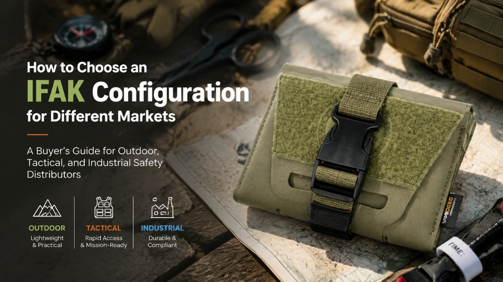

How to Choose an IFAK Configuration for Different Markets
JUL 15, 2026

A Buyer’s Guide for Outdoor, Tactical, and Industrial Safety Distributors
A Procurement Guide for Distributors, Outdoor Brands and Safety Suppliers
When sourcing IFAK kits, many buyers start with the same questions:
“How many items are included?”
“Which supplier offers the lowest price?”
“Can we add our logo?”
These questions are understandable.
However, experienced distributors usually discover another problem after comparing different suppliers:
Two products can both be called an “IFAK”, but their internal configurations may be completely different.
One may be designed mainly for basic wound treatment.
Another may be built around trauma response, where controlling massive bleeding and managing life-threatening injuries are the priority.
For distributors, outdoor brands, PPE suppliers, and safety equipment companies, choosing the right IFAK configuration is not simply a product decision.
It is a market positioning decision.
An IFAK Is More Than a Pouch
One of the most common mistakes in IFAK procurement is focusing on the external design.
A compact pouch, MOLLE attachment, or tactical appearance may make a product look professional.
But the real value comes from the components inside.
For example, a tourniquet is not just another accessory inside an IFAK.
In a remote outdoor environment, industrial accident scene, or tactical situation, the ability to control massive bleeding during the critical first minutes can determine whether an injury becomes manageable or life-threatening.
That is why when evaluating an IFAK supplier, buyers should first understand:
What emergency scenario is this configuration designed to support?
Step 1: Understand Your Customer’s Application
Different markets have different expectations. During conversations with distributors, we often find that the same word “IFAK” can represent very different product expectations depending on the market.
A distributor supplying outdoor retailers may need a different IFAK configuration compared with a company supplying mining operations.
The right question is not:
“What is the most complete kit?”
The better question is:
“What type of emergency does my customer need to prepare for?”
Outdoor Retailers and Outdoor Brands
Outdoor customers usually look for products that balance:
- portability
- usability
- essential trauma response capability
For example, a compact bleeding control kit may be suitable for:
- hiking equipment brands
- camping suppliers
- outdoor retailers
- adventure gear distributors
A lightweight IFAK MINI configuration may focus on essential trauma components such as:
- Tourniquet
- Emergency Bandage
- Compressed Gauze
These components address one of the most critical outdoor risks: severe bleeding after falls, sharp injuries, or accidents in locations where professional medical support may be delayed.
For outdoor brands, this type of product is not only an accessory.
It is a safety solution that helps customers increase preparedness without adding excessive weight or complexity.
Professional Outdoor and Expedition Applications
For expedition companies, adventure operators, and professional outdoor users, the requirement is usually higher.
Remote environments create additional challenges:
- longer evacuation times
- limited medical resources
- unpredictable injury scenarios
A more advanced compact trauma IFAK may include additional components such as:
- Chest Seal
- Nasal Airway
- Medical Shears
- Combat Tape
For example, chest seals are not included because they make the kit look more professional.
They exist because certain chest injuries require immediate attention before evacuation.
For professional outdoor operators, choosing the correct IFAK configuration is part of operational risk management.
Tactical and Emergency Response Markets
Tactical users often have different expectations.
Their focus is usually:
- rapid access
- trauma priorities
- mobility
A tactical IFAK configuration often emphasizes immediate trauma response rather than general wound care.
Components such as:
- tourniquets
- hemostatic solutions
- chest seals
- trauma dressings
are selected according to the potential injury environment.
For tactical distributors, the key question is whether the configuration matches the intended operational scenario.
Industrial Safety and PPE Markets
Industrial customers often have completely different procurement requirements.
A mining company, construction safety provider, or workplace safety distributor may need products that support broader emergency situations.
Possible considerations include:
- workplace injury risks
- burn incidents
- remote site response
- employee safety requirements
In these markets, an expanded emergency response kit may include additional wound care and protection components.
The objective is not to create the largest possible kit.
It is to create a configuration that matches workplace risks.
Why Configuration Matters More Than Item Count
During supplier evaluations, buyers sometimes compare products by counting items.
For example:
Supplier A: “Contains 20 items.”
Supplier B: “Contains 15 items.”
However, the number of items does not always represent the emergency capability.
A professional IFAK evaluation should consider:
1. Trauma priorities
Does the kit address:
- massive bleeding?
- airway management?
- respiratory injuries?
2. Application environment
Is it designed for:
- outdoor recreation?
- expedition operations?
- tactical response?
- industrial safety?
3. Customer expectations
Will your buyers expect:
- a basic emergency pouch?
- a professional trauma kit?
- a workplace safety solution?
How GoSafeMed Approaches IFAK Configuration
At GoSafeMed, we believe IFAK selection should start with application analysis, not simply product quotation.
Our IFAK solutions are developed around different market requirements, including:
- Outdoor safety applications
- Professional expedition use
- Tactical response scenarios
- Industrial safety environments
Instead of asking:
“How many pieces are inside?”
we encourage partners to ask:
“What emergency situation is this kit designed to solve?”
Because the right IFAK configuration is not necessarily the biggest one.
It is the one that fits the user’s real operational needs.
Final Thoughts
For distributors and brands, selecting an IFAK supplier is not only about purchasing a medical kit.
It is about choosing a product that matches your customer’s risks, expectations, and market positioning.
A well-designed IFAK configuration helps reduce procurement uncertainty, avoid unsuitable product selection, and create stronger product value in your market.
When evaluating trauma kits, always look beyond the pouch.
Look at the purpose behind the configuration.
Need Help Selecting the Right IFAK Configuration?
Different markets require different trauma response priorities.
Whether you are developing an outdoor safety product line, supplying PPE solutions, or sourcing professional trauma kits, our team can help you evaluate suitable configurations based on your application.
Contact GoSafeMed:
📧 Email: hellen@gosafemed.com
💬 WhatsApp: +8618977149057